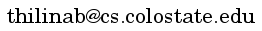

About Me
I am Thilina Buddhika, a Ph.D student at Computer Science Department at Colorado State University since Fall, 2013. My primary research interests are distributed and large scale systems security and data security. I am a member of DBSec group under the supervision of Dr. Indrakshi Ray.
Before starting my graduate studies, I worked as a software engineer at WSO2 Inc., which is an open source SOA middleware company.
I earned my bachelors degree from Department of Computer Science and Engineering, University of Moratuwa, Sri Lanka in 2009.
I was born and raised in the beautiful island of Sri Lanka. I am a big fan of Cricket and a passive listener of music.
Research
Data Stream Processing is a gaining a lot of traction due to the real time processing requirements of the continuous series of data generated by the sensors, monitoring systems, social networks, etc. Traditional store-then-process models such as relational databases and MapReduce frameworks are not feasible in these situations due to the storage complexities and the high latency associated with those systems. A new breed of systems called "data stream processing systems" has emerged to process continuous data streams in real time and near real time.
Security and stream processing systems is often an overlooked area. We have proposed an information flow control model for stream processing systems based on Chinese Wall security policy. This will prevent overt and covert information channels and ensures that only the authorized entities can access data items they are entitled to. We have developed a prototype based on an open source complex event processing engine called Siddhi to demonstrate our model is practical to use in real time stream processing use cases.
Distributed stream processing in heterogeneous environments is another related project that we've been working on. The objective is to distribute stream processing in a heterogeneous network which is comprised of processing nodes with different capabilities which are connected through links which are again heterogeneous with respect to their bandwidth and connectivity. The distributed processing plan should improve the bandwidth utilization while meeting the low latency processing requirement.
Publications
Thilina Buddhika ; Indrakshi Ray ; Mark Linderman and Anura Jayasumana " Secure complex event processing in a heterogeneous and dynamic network ", Proc. SPIE 9079, Ground/Air Multisensor Interoperability, Integration, and Networking for Persistent ISR V, 907907 (June 10, 2014); doi:10.1117/12.2053934; http://dx.doi.org/10.1117/12.2053934
Projects
Open Source Contributions

I am a committer and a project management committee member for Apache Axis2, a leading open source web services engine. I contributed mainly to its security module, Rampart where I authored the SAML 2.0 support for WS-Trust module of Rampart in addition to various bug fixes and improvements.

While employed at WSO2, I contributed to WSO2 Identity Server which is an open source identity and entitlement management server. Some of my major contributions are SAML 2.0 based single sign on implementation, OAuth 2.0 identity provider support, Security Token Service improvements and implementing XMPP based multi-factor authentication.

I am a two times Google Summer of Code winner in 2008 and 2009. In Summer 2008, I contributed to Apache Tuscany by implementing Tuscany Service Component Architecture support in Apache Geronimo. I started contributing to Apache Rampart through GSoC 2009 by improving its test coverage.
Currently I'm moving my projects from Bitbucket to Github. Once the transition is completed, I'll post the links here.
Course Projects
A distributed overlay network in which the routing plans are calculated using Dijkstra's algorithm. The overlay network is formed according to a Cayley graph. The communication layer is implemented using Java TCP sockets.
Contact via Email for Source CodeA MapReduce program that analyzes a corpus comprised of books published by authoris spanning centuries. As part of the analysis, Flesch Reading Ease and Flesch–Kincaid Grade Level scores along with the Term Frequency-Inverse Document Frequency (TF-IDF) scores are calculated based on the extracted N-grams. This program was implemented targeting Hadoop MapReduce runtime and was tested for a corpus of 1000 books obtained from Project Guttenberg.
Contact via Email for Source CodeJava NIO based server implementation backed by a configurable thread pool implemented from the ground up. The thread pool is capable of handling incoming network connections, processing traffic and sending out data. This implementation is extensible such that a custom message processing logic can be plugged-in. This implementation was tested upto 200 concurrent users with a thread-pool with 5 worker threads.
Contact via Email for Source CodeTeaching
I work as a graduate teaching assistant at CSU Computer Science Department. My responsibilities include grading assignments and conducting lab sessions and discussion groups.
- Fall 2013 - CS 161: Object Oriented Problem Solving
- Spring 2014 - CS 430: Database Systems
- Summer 2014 - CS 430DL: Database Management Office hours can be arranged upon request.
Connect

Social Networks


Location
Com. Sci. Building, Rm 235
Colorado State University
Fort Collins, CO 80523-1873